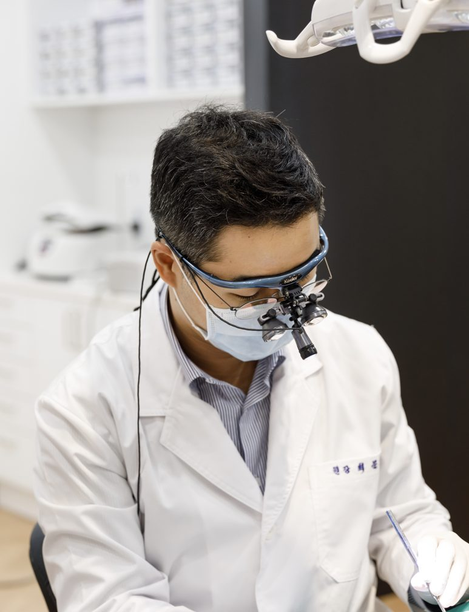
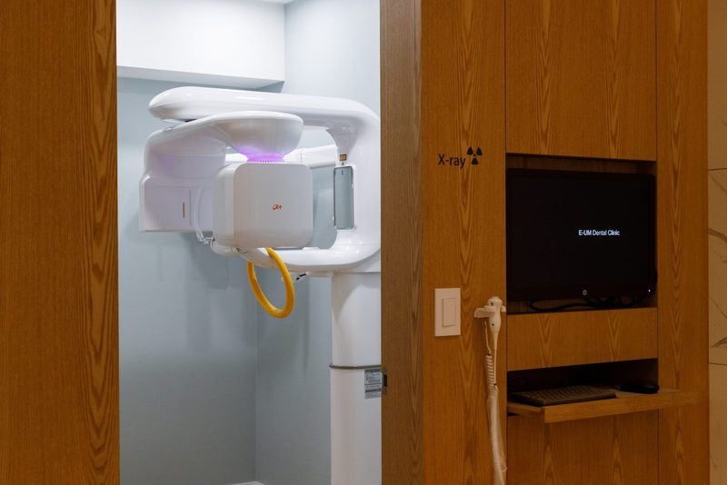
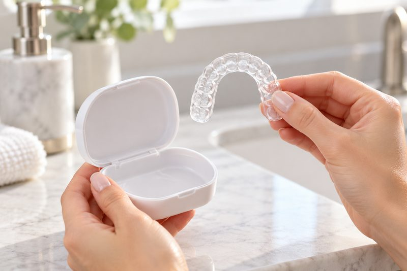
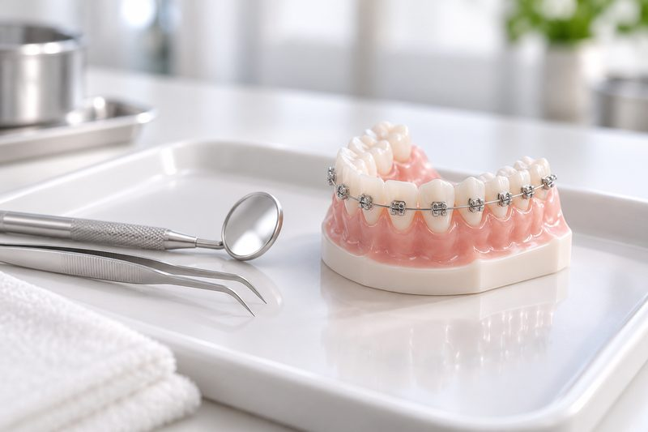
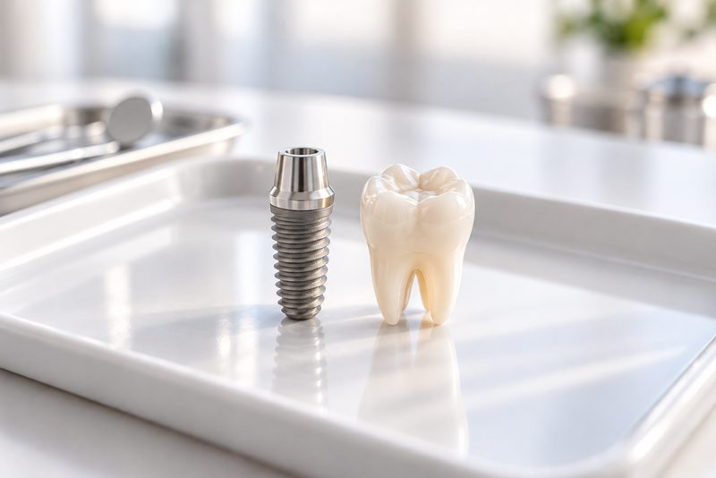
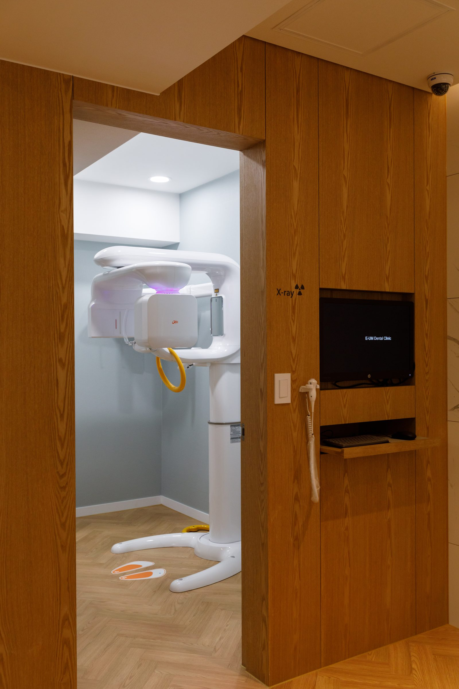
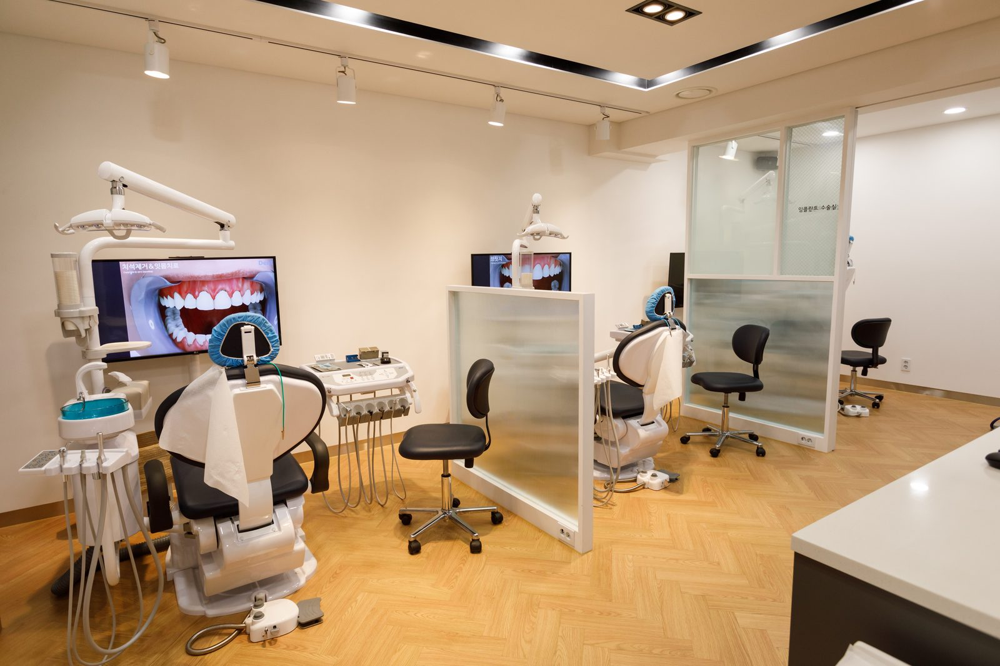
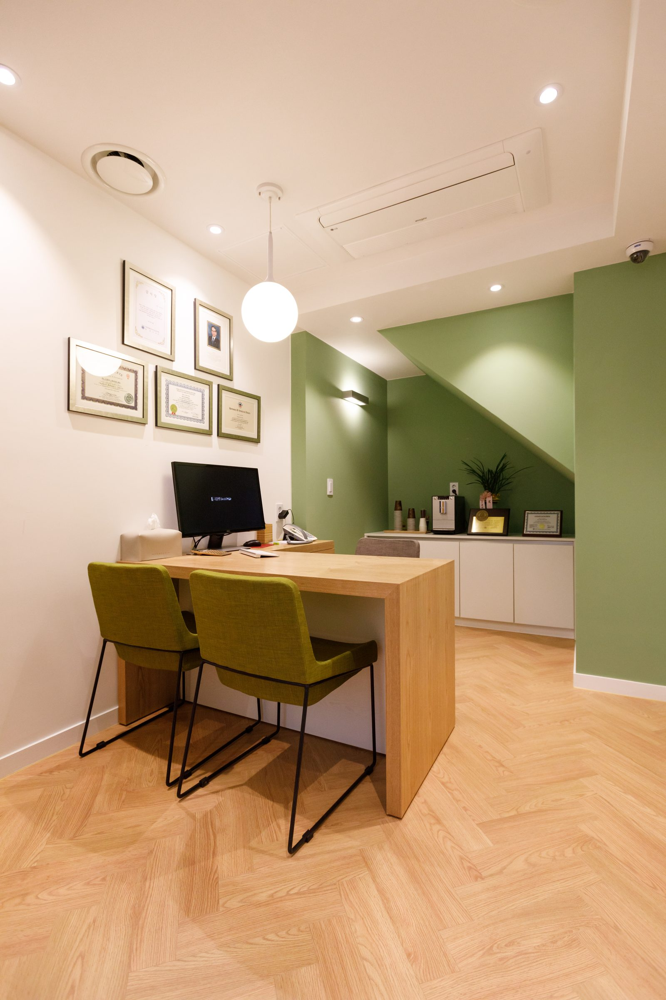

Info
진료시간 · 오시는 길
진료시간
| 월 · 화 · 금 | 09:30 – 18:00 |
| 수요일 | 09:30 – 19:00 |
| 토요일 | 09:30 – 13:30 |
| 목요일 | 정기휴무 |
| 일요일 · 공휴일 | 휴진 |
※ 점심시간 12:30 – 14:00 (토요일 제외)
턱관절 · 교합 · 통증을 함께 살피는 진료.
치아만 보지 않고, 턱관절과 신경까지 확인합니다.
※ 약 6개월 치료 전후 사진 (동일 조건 촬영) · 본원의 실제 치료 사례이며, 치료 결과는 개인에 따라 다를 수 있습니다.

턱에서 소리가 나거나, 입이 잘 벌어지지 않거나, 아침마다 턱이 뻐근하신가요? 턱관절 장애는 정확한 원인 진단이 치료의 시작입니다.
이음턱편한치과는 치아만 보지 않고 턱관절과 교합, 통증까지 함께 살피며, 과잉진료 없이 꼭 필요한 치료만 정직하게 안내해 드립니다.

턱관절 소리, 통증, 개구 장애 등 턱관절 질환을 정밀 진단하고 교합안정장치(스플린트), 물리치료 등으로 치료합니다.

수면 중 이갈이와 주간 이악물기 습관은 턱관절과 치아를 손상시킵니다. 맞춤 장치와 습관 교정으로 관리합니다.

치아 배열과 함께 교합(맞물림)의 균형을 살피는 교정 치료로, 턱관절에 편안한 교합을 만듭니다.

상실된 치아를 자연치아에 가깝게 회복합니다. 교합 균형을 고려한 정밀 식립으로 오래 쓰는 임플란트를 지향합니다.
충치부터 사랑니까지, 일반 진료도 꼼꼼히 진행합니다. 자세한 안내 보기 →

3D-CT와 정밀검사를 통해 턱관절 상태를 평가하고, 증상의 근본 원인을 분석합니다. 원인을 알아야 치료 방향이 정확해집니다.

환자 상태에 따라 턱관절 물리치료, 교합교정, 스플린트 등 비수술적 치료를 우선적으로 고려합니다.

충분한 상담을 통해 환자 개개인에게 맞는 치료 계획을 세우고, 검사 결과를 충분히 설명드린 후 치료 방향을 함께 결정합니다.
| 월 · 화 · 금 | 09:30 – 18:00 |
| 수요일 | 09:30 – 19:00 |
| 토요일 | 09:30 – 13:30 |
| 목요일 | 정기휴무 |
| 일요일 · 공휴일 | 휴진 |
※ 점심시간 12:30 – 14:00 (토요일 제외)